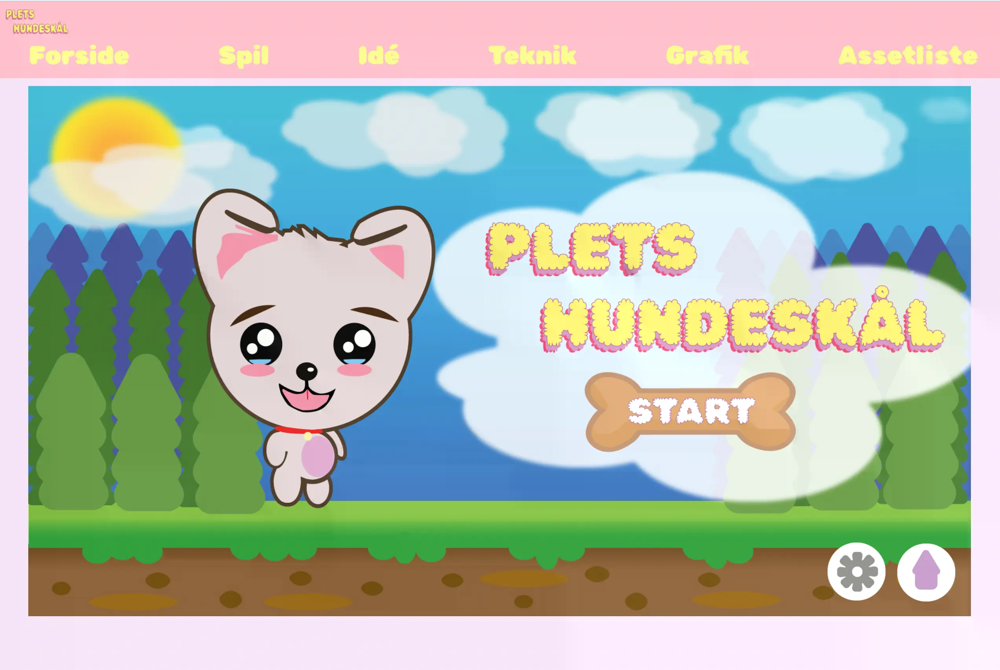

Opgaven
-
I tema 4, fik vi til opgave at fremstille en interaktiv
brugergrænseflade, ved at anvende viden fra tidligere forløb som
tema 2 og tema 3. Her skulle vi designe et simpelt og enkelt
klikbart spil, med fokus på en bestemt stilart.

Link til spilwebsite:
Link
Arbejdsprocessen
-
I processen til tema 4, arbejdede jeg med metoden papir prototype,
som jeg brugte til udviklingen af spillets koncept. Herefter
tilegnede jeg mig ny viden om Javascript, samt nye metoder som
aktivitetsdiagram og state machine diagram. Vi lærte om moderne
design konventioner. Her lærte vi om rentegning, kompositoriske
principper, samt atmosfærisk perspektiv. Jeg anvendte min viden
fra tema 2 til at opbygge min html og css, samt den viden jeg
havde tilegnet mig fra tema 3 om brugervenlighed i forbindelse med
spillets start-, regel-, vinder- og taberskærm. Derudover anvendte
jeg desk research metoden til at undersøge min valgte stilart, før
jeg gik i gang med min designproces. Igennem forløbet med tema 4,
tilegnede jeg mig ny viden om javascript, her lærte jeg hvilken
rolle javascript har og hvordan det arbejder sammen med html og
css.